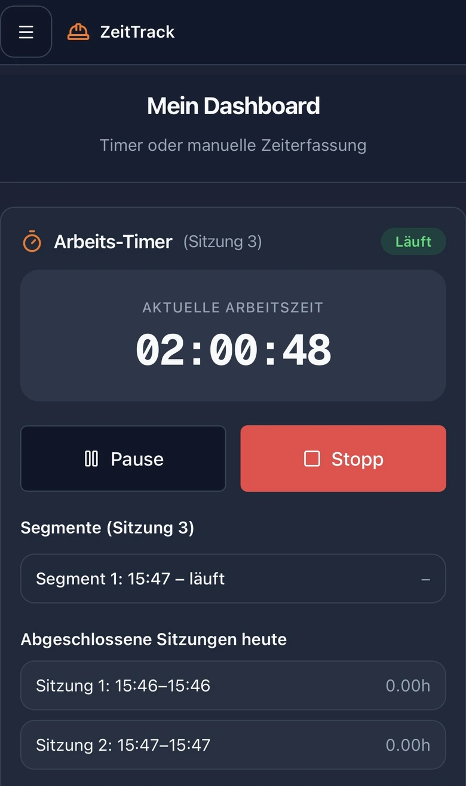

ZeitTrack
Arbeitszeiten einfach erfassen und laufende Sitzungen im Blick behalten.
Einblicke in die App.


Ein ähnliches Projekt besprechen Nächste App: Kommunikationsplattform
Arbeitszeiten einfach erfassen und laufende Sitzungen im Blick behalten.

Ein ähnliches Projekt besprechen Nächste App: Kommunikationsplattform